Key takeaways
- Disabling AI features helps to reduce the amount of personal data collected by the system.
- Reduces system resource usage when turned off.
- Disabling unnecessary AI features reduces background processes.
- By turning off AI features, privacy can be improved.
Hey, let’s discuss about 13 Windows AI features to turn off for better privacy. AI is widely used in modern systems such as Windows 11 to automate tasks, improve productivity, and enhance user experience. However, AI also has several disadvantages. It may raise privacy concerns because personal data can be collected and analysed by the system.
Table of Contents
What are the Advantages of Disabling AI Features?
AI-generated suggestions or results are not always accurate and may sometimes provide misleading information. Disabling AI features improves data privacy, boosts device performance, saves battery life and minimises accidental errors.
1. Helps to reduce battery usage on laptops.
2. In fewer AI operations, less data is analysed by the system.
3. When turned off, these actions are performed only when the user manually selects them.
13 Windows AI Features to Turn Off for Better Privacy
In the Microsoft Copilot, sometimes the information or answers generated by Copilot may be inaccurate or misleading. It may also raise privacy concerns because user data can be processed to generate responses. In addition, Copilot can consume system resources and may distract users with frequent suggestions, which can affect productivity in some cases.
How to Uninstall Copilot and What Changes Occur After Uninstallation
Microsoft Copilot is an AI tool. Although AI tools are good at generating answers quickly, they can negatively affect our basic thinking abilities. Copilot is one example. Copilot frequently generates inaccurate or misleading information. This can lead to misunderstandings of the concept and can affect studies. To uninstall Copilot, let’s remove it from settings before removing it from separate apps
How to Remove Copilot from the Main Application
Microsoft Copilot is a built-in AI assistant that helps with tasks, answers questions and controls settings. On new Windows 11 PCs, the Copilot app should already be installed by default. Here, in the following steps, I will show you how to remove Copilot from the main application:
- First, go to the settings and click on the apps.
- In the apps, click on installed apps.
- Scroll down and search for Copilot.
- Click on the 3 Dots next to the Copilot option.
- Select the uninstall option.
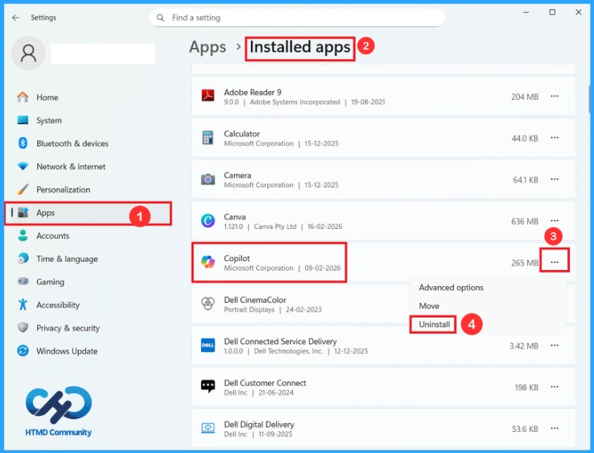
Changes Occur After Uninstalling Copilot
Uninstalling Copilot will cause many changes on your PC. The icon of Copilot from your taskbar and start menu will be removed. Also, if you delete it, the shortcut key like Windows key + C will be unavailable. When you right-click on apps like Firefox and Microsoft Edge, the available feature of Copilot will be removed, so you can’t use it for features like summarising the page. Ask Copilot will be turned off by default.
Steps to Remove Copilot from Windows Search Using Registry Editor
In Windows search, there will be many suggestions from Microsoft, such as recent files from OneDrive or SharePoint, app recommendations, trending search, AI tools, and Copilot. So, all these may make it cluttered. To remove it, press Win + R and a run command box will open on the screen. Type Regedit and press Enter.
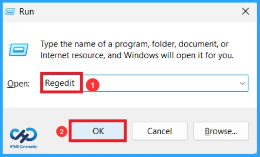
Then navigate to HKEY_LOCAL_MACHINE\SOFTWARE\Policies\Microsoft\Windows. After right-clicking on the Windows key, select New > Key and rename the key as Explorer. If an Explorer key already exists on your system, use that. In the Explorer key, right-click on the white space and select DWORD (32-bit) Value. Rename the value as DisableSearchBoxSuggestions. Double-click on the new value and change it from 0 to 1 using the edit option, and click ok. When you restart your PC, no suggestion and Copilot will be there on Windows search
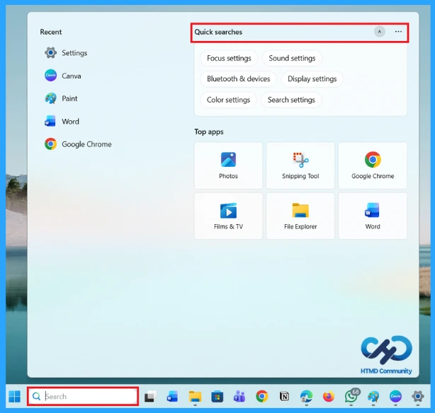
In File Explorer, when you right-click on it, the context menu will contain AI actions. “AI actions” is a menu that gives you access to features depending on the file type. These features are not part of the file manager. Instead, they are pointers to perform AI tasks within other applications, such as Microsoft app 365, Photos, or Paints. To remove AI Actions, open Settings > Apps > Actions, and turn off the toggle for all available options, like Paint, Photos, Teams, Microsoft 365 Copilot, etc.
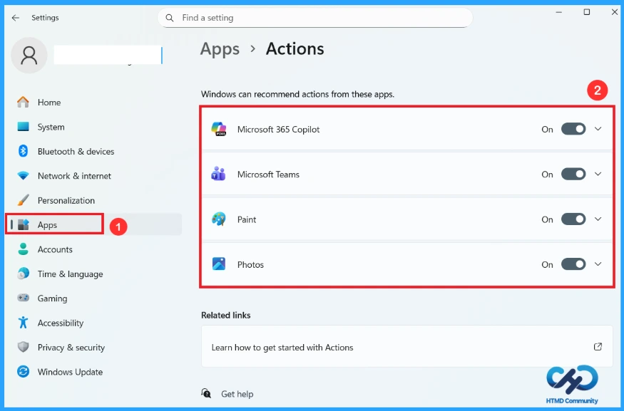
How to Disable Copilot in Microsoft Edge
Microsoft Edge has Copilot integration. The influence of Copilot is increasing day by day. The company is ensuring that it is obvious enough for users to click. At present, the Microsoft Copilot logo appears in the top-right toolbar as a button. Open Microsoft Edge and click on the three dots on the toolbar, or press Alt + F and select Settings.
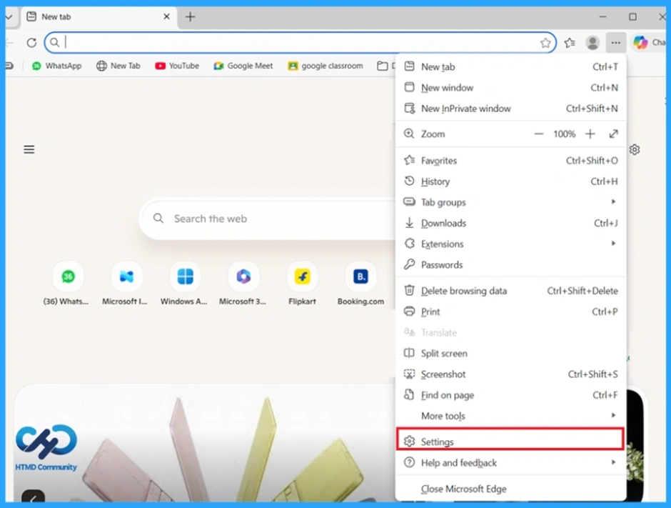
On the Settings page, select Appearance. Scroll down and click Copilot and sidebar. You can turn off the Sidebar altogether; this will never show the sidebar, and click on the Copilot option and turn off the Show Copilot button on the toolbar. This will remove the Copilot logo at the top of Edge. You can also turn off the toggles below.
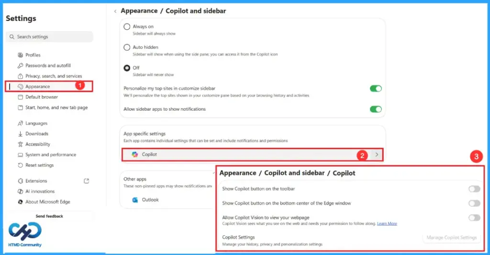
To remove all AI Features in Microsoft Edge, including the Ask Copilot menu that shows up while browsing in Edge, click on the language in the settings and turn off the toggle for Use Copilot for writing on the web. This option uses AI writing assistance to help you draft, rewrite text, and adjust your style. Also, turn off the Copilot Mode on AI innovation if it is turned on.
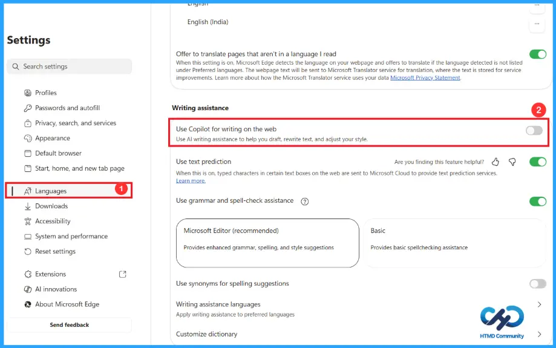
How to Remove Copilot from Notepad
Notepad in Windows includes AI features powered by Copilot that help refine and shorten text with the assistance of ChatGPT. By default, these AI features are enabled on managed devices. IT admins can choose if they want to allow these features to be used in their organisations. By turning it off, you won’t be able to see the Copilot logo in the notepad. Also, when you turn off the formatting and spell check toggle, you can use the simple and basic notepad. Also, now the interface will become less crowded. Follow the steps below to remove Copilot from Notepad:
- Open Notepad.
- Click on the Settings icon in the top right corner.
- In the AI features section, you can see the Copilot toggle. To disable AI features in Notepad, turn it off.
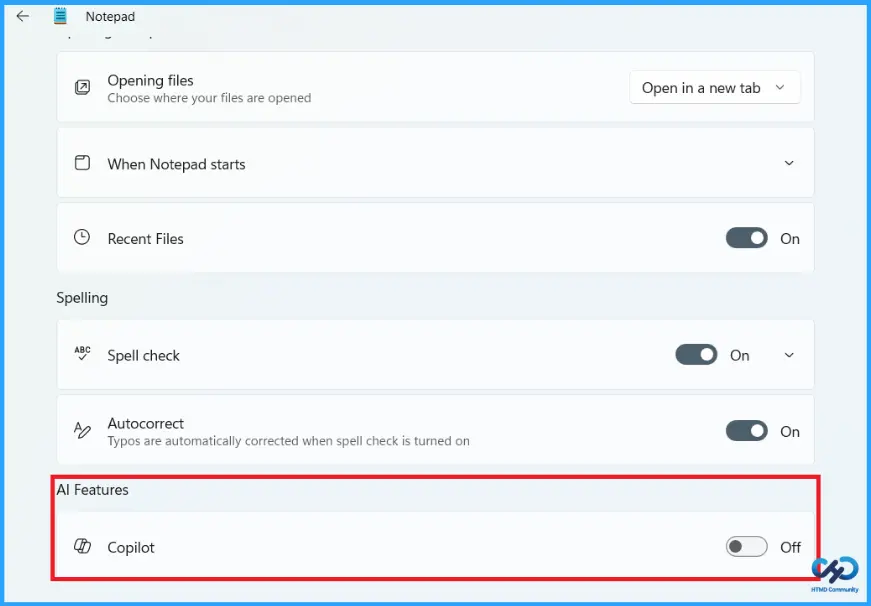
How to Remove AI features from the Windows Photos App
The Windows Photos app is a bit complicated to use, so if you want a gallery app that just opens images and has some basic editing features, then you can use the legacy Windows Photos app. The legacy versions of the Photos app gather photos from your PC, phone, and other devices, and put them in one place where you can more easily find what you’re looking for.
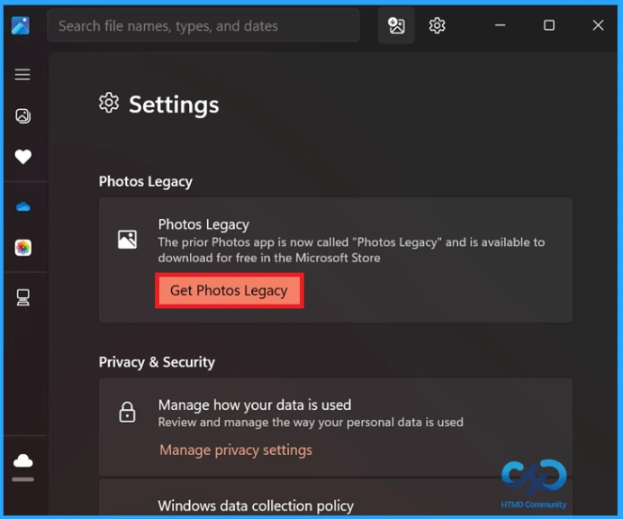
You can view, edit, compare, and create albums easily. This legacy version does not include AI editing tools or smart features. But it does have cloud sync from OneDrive, though you can turn it off. In the following steps, I will show you how to disable AI features in the Microsoft Photos app.
- Step 1: Install the legacy Photos app.
- Step 2: Click the Settings icon in the top-right corner.
- Step 3: Scroll down to see the option Photos Legacy.
- Step 4: Click the Get Photos Legacy button.
- Step 5: When you click Get Photos Legacy, the Microsoft Store will open on the screen. After that, click Get and allow Windows to download and install it from the Microsoft Store.
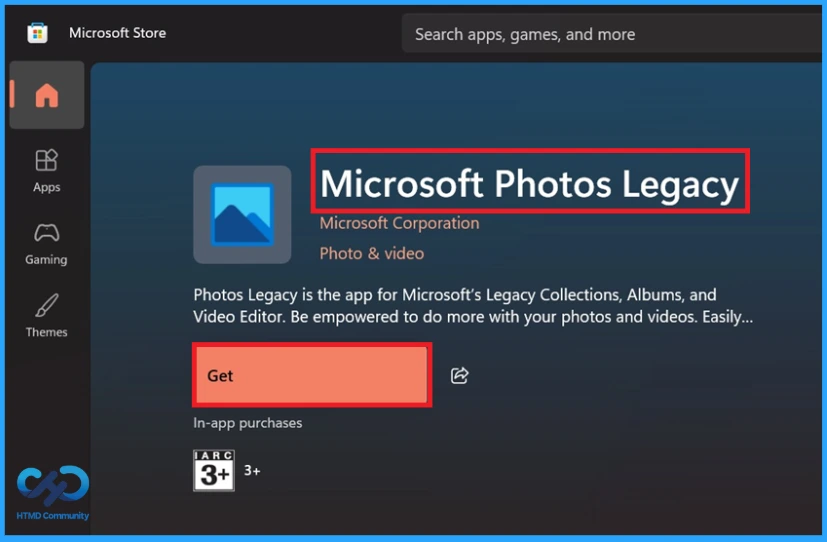
How to Uninstall the Modern Photos App
After installing the Legacy Photos app, you need to uninstall the modern Photos app. To uninstall it, first open Settings, click on the apps and select the option Installed apps. Scroll down until you see Photos, click on the three dots and select uninstall.
When you uninstall the modern photos app, go to the settings > Apps >Default apps. When you scroll down, you’ll find that some image file extensions are set to open with Photos Legacy as the default. Now, if you open an image from File Explorer, you can’t see the Copilot logo there.
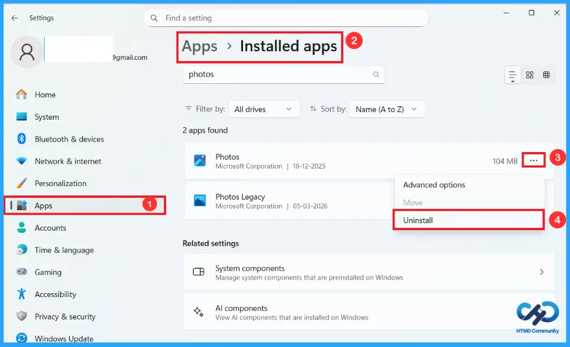
How to Disable AI Features in the Paint App
The Microsoft Paint app on Windows 11 has features such as Generative edit, Image Creator, Generative erase, and Remove background. It is not simple to remove Copilot from the Paint app. Follow the steps below to remove it. You can remove AI features from paint using either the Group Policy Editor or Registry Editor. Here I will demonstrate how to remove using Registry Editor.
- Press Win + R and type regedit to open the Registry Editor.
- Navigate to the following path: HKEY_LOCAL_MACHINE\SOFTWARE\Microsoft\Windows\CurrentVersion\Policies\Paint
If you don’t find the Paint key, right-click Policies, select New, click Key, and rename it to Paint. - Select the Paint key, and right-click the white space on the right side, select New > DWORD (32-bit) Value.
- Give the name as DisableImageCreator. Then double-click it and change the Value data from 0 to 1. Click OK.
- Now close the Registry Editor and restart the Paint app. You’ll no longer see the Image Creator option under Copilot.
Repeat the same process for Generative Fill and Cocreator with the DWORD Values as given in the table and change the Value data to 1 for both, as shown in the screenshot below.
| AI Generative tools | DWORD values |
|---|---|
| Generative Fill | DisableGenerativeFill |
| Cocreator | Disable Cocreator |
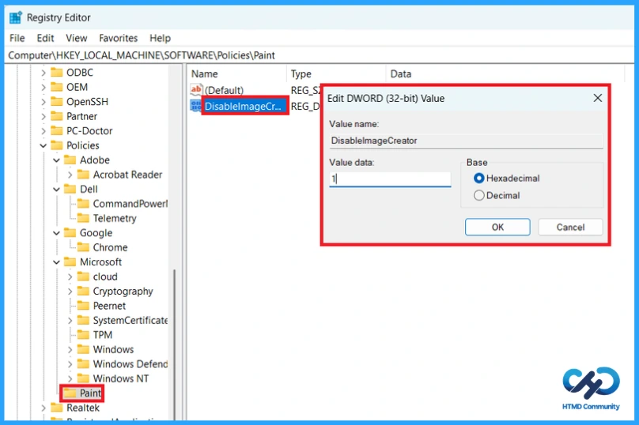
AI features Generative erase and Remove background are both new additions to Paint, and those two can’t be removed, yet. But if you want the app to behave like the legacy Photos app, replace the new Paint app with the classic MS Paint. After installing the classic MS Paint, make sure to do the following to make this the default Paint app:
- Open Settings > Apps > Advanced app settings
- Click on App execution aliases.
- Scroll down and find Paint (or mspaint.exe).
- Turn the toggle off.
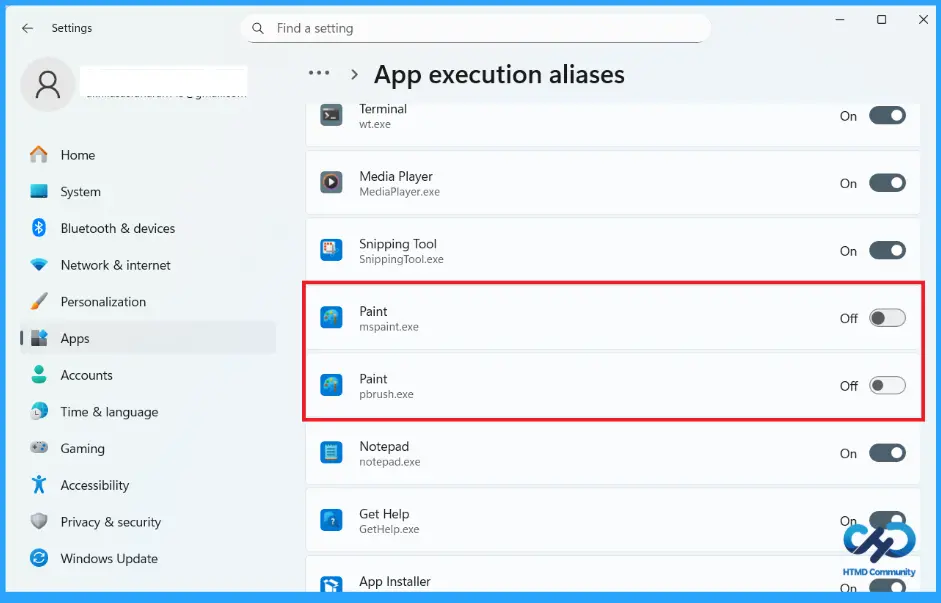
How to Remove AI Features from Outlook
Outlook is an email client, and most people do not want an AI swooping in to analyse the confidential emails that they send and receive. Outlook for Windows has a feature that analyses our email content to provide connected experiences. It doesn’t particularly use the word “AI”, such data collection is typically used for AI-powered experiences. To turn this off in Outlook, go to Settings > General > Privacy and data > Privacy settings.
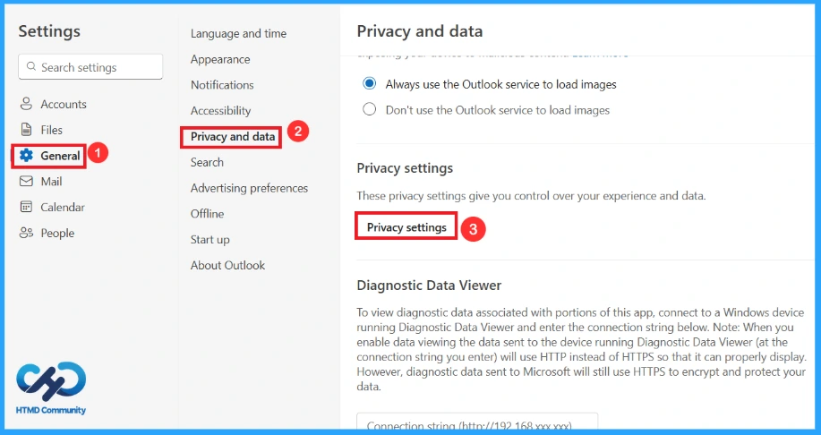
After these steps, turn off the toggle for “Turn on experiences that analyse your content”. If you want to experience better privacy, turn off the toggles for “Send optional diagnostic and usage data to Microsoft” and “Turn on experiences that download online content” as well.
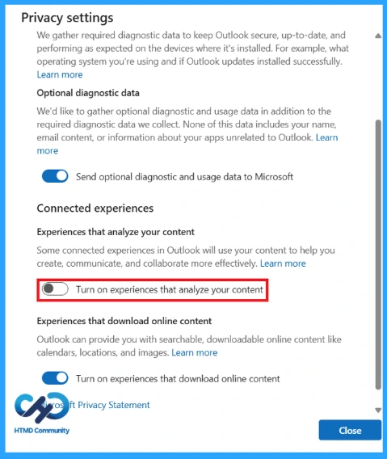
Steps to follow to Remove Copilot from Outlook
If you are a Microsoft 365 subscriber, your Outlook app will also have a Copilot logo in the ribbon with features that allow you to Chat with Copilot without leaving Outlook and Draft an email. If you don’t want to draft your emails with AI, follow these steps to disable Copilot from Outlook:
- Open Outlook and click the Settings icon on the top right.
- At the bottom of the list would be Copilot. Click on it.
- Turn off the toggle for “Turn on Copilot”. This would remove Copilot from the ribbon in Outlook.
Remove AI Features from OneDrive
Microsoft OneDrive uses AI-powered technology to scan and analyse photos to detect faces and group them together. This feature, known as “People” or “Facial Grouping,” is designed to help users organise and find specific people across their photo library. You can turn it off by following the steps below:
- Open the OneDrive app, click the settings icon and select the settings option.
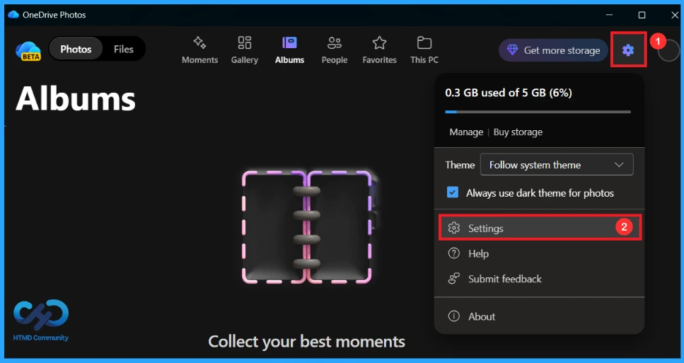
This action opens the default browser because Microsoft’s cloud storage app essentially functions as a web wrapper. The company has also not continued developing a native Windows application for OneDrive. In the Options menu for OneDrive, click on Photos and turn off the toggle for “Use tags to find and organise photos”.
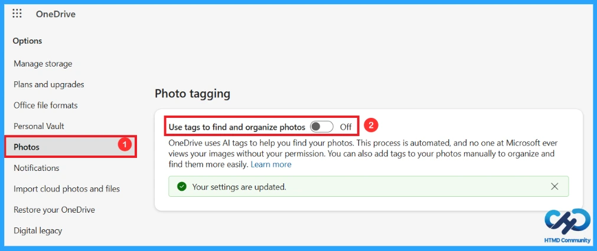
How to Disable Gaming Copilot in Windows 11
Microsoft’s Gaming Copilot is currently available in the Xbox mobile app, in-game bar for Windows 11 and on the ROG Xbox Ally handhelds. Gaming Copilot (Beta) syncs your conversation across all areas where you’re signed in with your Microsoft account. But gamers don’t need an AI to help with the game. The Gaming Copilot banner shows up by default when you open Xbox Game Bar (Win + G).
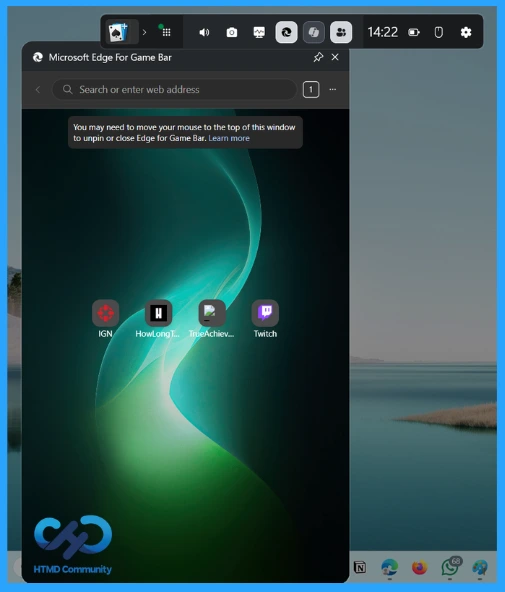
To disable Gaming Copilot from the Xbox Game Bar, go to the Gaming Copilot panel and click Settings. From there, select Privacy settings. In Privacy settings, turn off all the toggles to prevent model training and data collection by Copilot while you game. You can also click the Close button in the Gaming Copilot widget.
After completing these steps, in the Game Bar panel, click the Settings icon, select More settings and click on the widgets. After that, scroll down until you see Show in widget menu. From there, turn off the toggle for Gaming Copilot. This will remove the Copilot logo from the Xbox Game Bar.
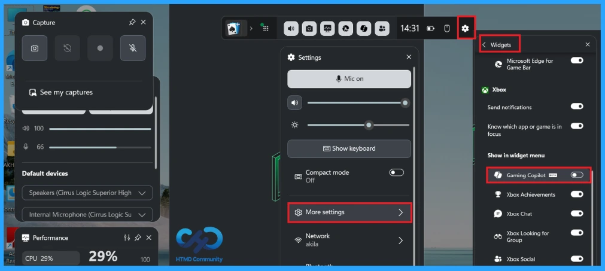
Disable Windows Studio Effects in Copilot+ PCs
Windows Studio Effects uses AI-powered machine learning through a neural processing unit, which is also known as NPU. These features can make changes like Background Blur, Eye Contact, Auto Framing, Voice Focus, Portrait light, Creative filters, and Eye contact Teleprompter. You can remove Windows Studio Effects using the following steps:
- Open Settings.
- Click Bluetooth & devices, and from the right side, select Cameras.
- In the connected camera, you can see the cameras currently attached. Select the one that you want to disable Studio Effects.
- In the basic settings below, you’ll see Advanced camera options. Click Edit.
- Turn off the toggle for the option Use Windows Studio Effects. Then click Apply.
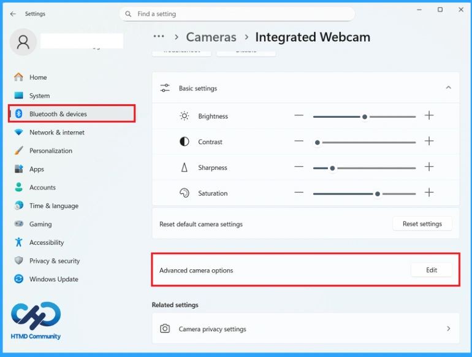
How to Disable and Completely Remove Windows Recall
In Windows Recall screenshots will be taken in real time (approximately every 5 seconds) and stored, and these images will be analysed. Recall will use the NPU to extract the texts in the screenshots and save them.
Steps to Uninstall the Recall from Settings
This is the easiest and safest method. At first, open the settings and click on System. Scroll down and select Optional features. Then click on More Windows features as shown in the screenshot and scroll down until you find Recall in the list, uncheck it and click Ok and restart your PC.
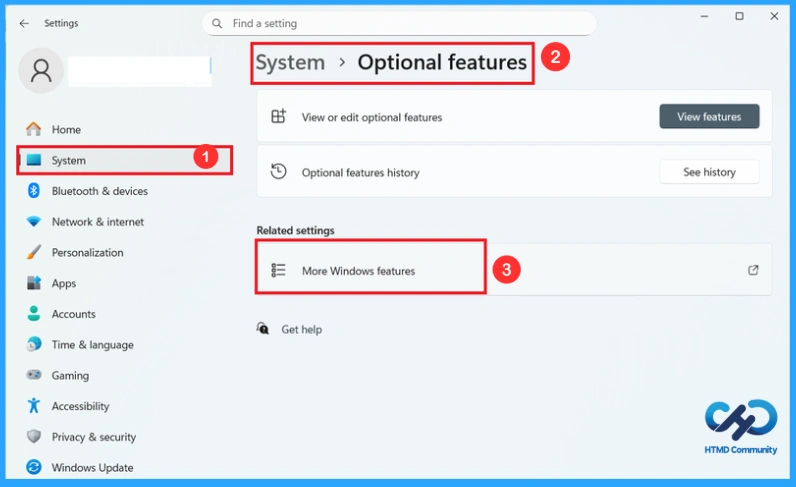
How to Disable Click to Do on Copilot+ PCs
Click to do on Copilot+PCs is an AI-powered feature. It helps to analyse your screen to provide content-aware action for texts and images in an immediate way. It lets you right-click selected text, images, or screenshots and send them directly to Copilot for AI actions. If you don’t want Windows to constantly bring up AI when you select something, you can turn this off.
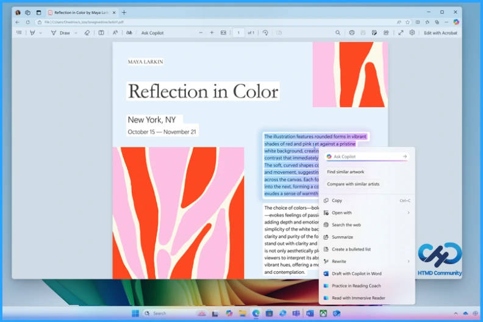
Turn off Click to Do from Settings
To turn off Click to Do from settings, first open Settings, click Privacy & security, then select Activity history or Windows permissions (may vary), and Find Click to Do and turn the toggle off.
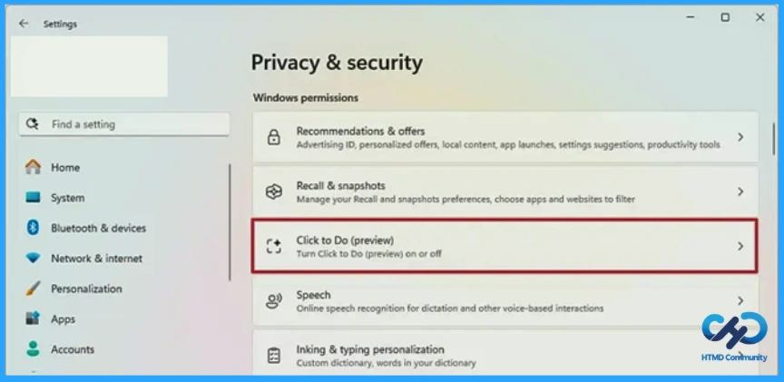
Need Further Assistance or Have Technical Questions?
Join the LinkedIn Page and Telegram group to get the latest step-by-step guides and news updates. Join our Meetup Page to participate in User group meetings. Also, Join the WhatsApp Community and WhatsApp Channel to get the latest news on Microsoft Technologies. We are there on Reddit as well.
Author
Anoop C Nair has been Microsoft MVP from 2015 onwards for 10 consecutive years! He is a Workplace Solution Architect with more than 22+ years of experience in Workplace technologies. He is also a Blogger, Speaker, and Local User Group Community leader. His primary focus is on Device Management technologies like SCCM and Intune. He writes about technologies like Intune, SCCM, Windows, Cloud PC, Windows, Entra, Microsoft Security, Career, etc.